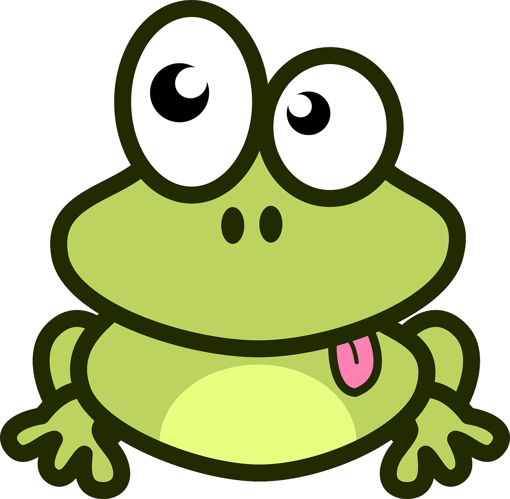

ToDo list with
frog
ToDo list with frog - подразумевает под собой сайт, на котором вы,
сможете составлять свой список
дел (в переводе с англ:
Список дел с лягушкой).
Здесь присутствуют такие функции как:
- Добавление новых задач;
- Добавить название и описание новой задаче;
- Пометить выполненную задачу;
- Удалить задачу из списка;
- Удалить из списка все выполненные задачи;